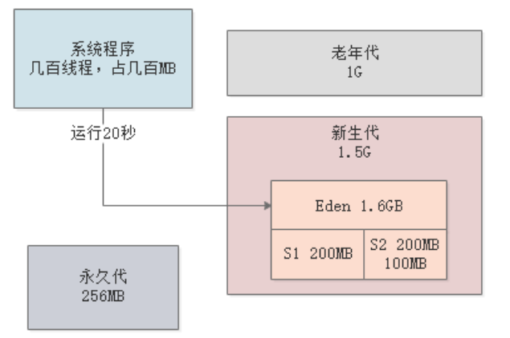
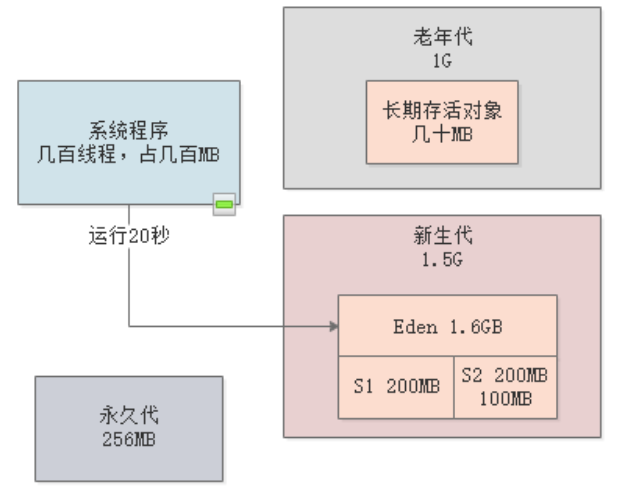
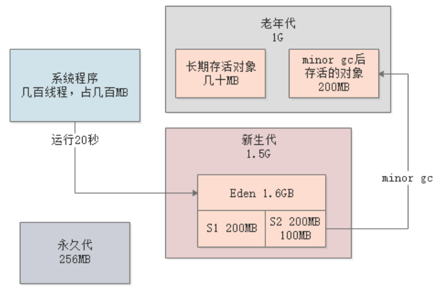
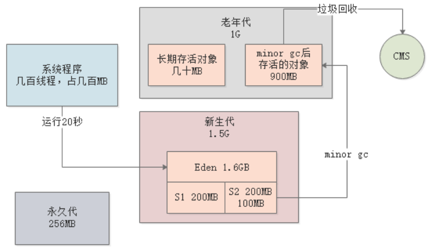
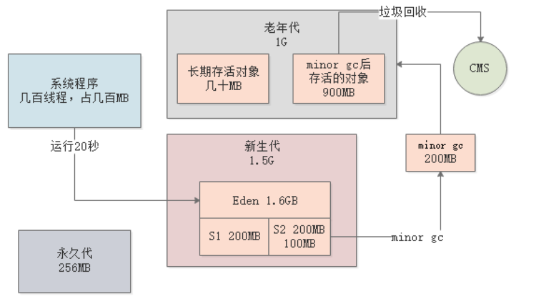
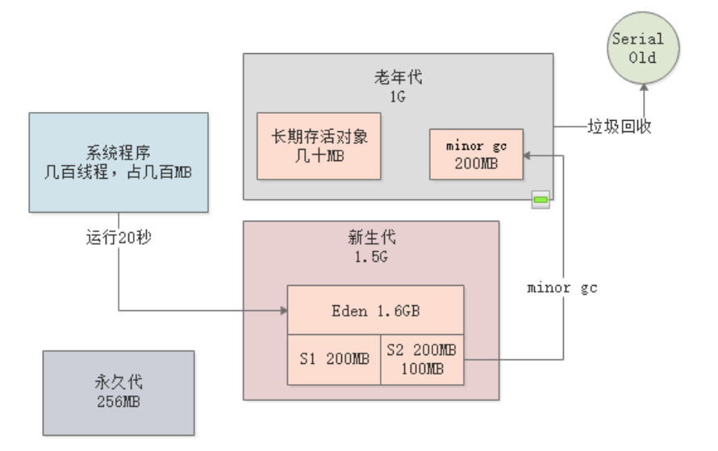

上一章中，我们通过一个实际案例讲解了如何进行新生代的JVM参数调优，本章我们来继续分析这个问题，在上一章优化好的背景下，讲解如何进行老年代的调优。
我们先来回顾下，每隔20s，新生代经历Minor GC后，会产生100MB存活对象：

JVM的参数配置如下：
-Xms3072M -Xmx3072M -Xmn2048M -Xss1M -XX:PermSize=256M -XX:MaxPermSize=256M -XX:SurvivorRatio=8 -XX:MaxTenuringThreshold=5 -XX:PretenureSizeThreshold=1M -XX:+UseParNewGC -XX:+UseConcMarkSweepGC
首先，由于我们设置的晋升年龄为5，所以躲过5次Minor GC的存活对象会进入老年代，这些对象一般是系统的业务逻辑组件，不会很大，基本也就几十MB，它们会长期存活在老年代中：

按照我们的JVM参数，超过1MB的大对象会直接进入老年代。但是我们的系统中假设是不存在这种大对象的，所以可以忽略这块内容。
Minor GC过后，存活对象大小可能超过Suvivor空间大小（200MB），虽然我们之前已经对此进行了优化，调整过S区的大小，但是在一些突发场景下，比如大促期间，仍然可能出现超过200MB的存活对象。
我们现在就假设每隔5min，就会有一批超过200MB的存活对象进入老年代：

那么多久会触发Full GC呢？之前分析过，触发Full GC一共有以下几种情况（排除JDK1.6及以前的情况）：
-XX:CMSInitiatingOccupancyFaction参数，当老年代内存占用达到该比例时，也会触发Full GC；其实在生产环境下，只要对新生代进行过上一章节的优化，那对象进入老年代的速度是非常慢的。很可能在系统运行了大约半小时~1小时之后，才会有接近1G的对象进入老年代，而且上述Full GC的情况一般需要在老年代近乎快占满的情况下才可能触发。
经过前面的推算，我们基本可以知道，系统运行1小时后，老年代的存活对象大概有900MB，此时就会触发一次Full GC：

但是由于老年代只剩下约100MB的可用空间，所以在CMS进行并发清理的时候，如果有新的对象（假设大约200MB）进入老年代，就会出现“Concurrent Mode Failure”：

当出现“Concurrent Mode Failure”时，JVM会立即进入“Stop the World”，然后切换成Serial Old垃圾回收器，采用单线程方式进行老年代的垃圾回收，回收掉900MB对象后，再恢复系统运行：

Concurrent Mode Failure出现的概率其实是非常小的，首先必须是在CMS触发Full GC期间，其次还需要在此期间有对象晋升到老年代，且这些对象的大小要大于老年代可用空间。
经过上述调优后，JVM的参数配置如下：
-Xms3072M -Xmx3072M -Xmn2048M -Xss1M -XX:PermSize=256M -XX:MaxPermSize=256M -XX:SurvivorRatio=8 -XX:MaxTenuringThreshold=5 -XX:PretenureSizeThreshold=1M -XX:+UseParNewGC -XX:+UseConcMarkSweepGC -XX:CMSInitiatingOccupancyFaction=92
在CMS完成Full GC后，会对老年代进行内存碎片整理。我们可以通过配置来设置经过多少次Full GC后进行一次内存碎片整理。
但是，通过上述分析，我们知道，Full GC的频率本身并不高，在高峰时期也就一个多小时一次，高峰过去后，很可能几小时才会触发一次Full GC。所以，对于内存碎片整理，保持默认值就可以，即每次Full GC完成后进行一次整理。
经过上述调优后，JVM的参数配置如下：
-Xms3072M -Xmx3072M -Xmn2048M -Xss1M -XX:PermSize=256M -XX:MaxPermSize=256M -XX:SurvivorRatio=8 -XX:MaxTenuringThreshold=5 -XX:PretenureSizeThreshold=1M -XX:+UseParNewGC -XX:+UseConcMarkSweepGC -XX:CMSInitiatingOccupancyFaction=92 -XX:+UseCMSCompactAtFullCollection -XX:CMSFullGCsBeforeCompaction=0
本章，我们讲解了针对老年代的调优，其实可以看到，老年代调优的根本目的就是降低Full GC频次，而前提就是对Minor GC进行优化，以减少对象进入老年代。
对于很多Java系统而言，只要对系统运行期间的内存模型做好预估，然后合理分配JVM的各内存区域，尽量让Minor GC后的存活对象留在Survivor不要去老年代，那么即使其余的JVM参数不做优化，系统性能基本上也能满足要求。